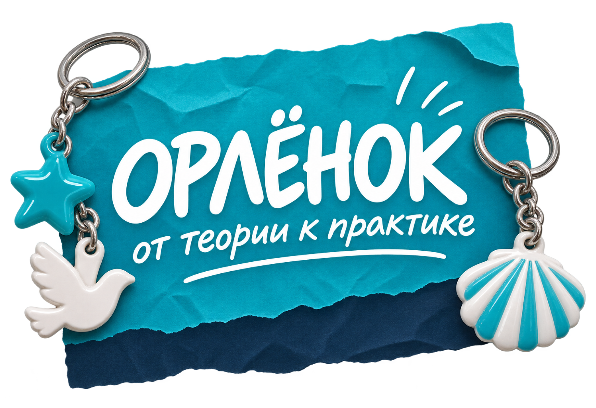
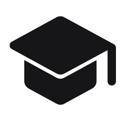
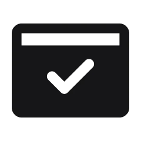
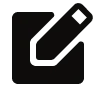
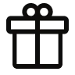
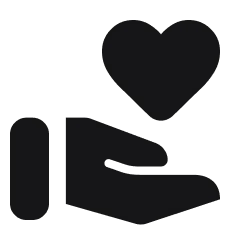

Замечай
Исследуй жизнь своего лагеря. Найди то, что хочется сохранить и передать другим.

Истории твоего лагеря.
Дизайн, который придумал ты.

Можно начать без опыта
Свой проект
Задачи в конструкторе
Макет, мокап
Небольшая группа:Любимое место, традиция, событие или фраза экипажа могут стать началом твоего проекта. Мы поможем превратить наблюдение в образ и собрать макет из подготовленных блоков. Тему и сочетание элементов выбираешь ты.
Исследуй жизнь своего лагеря. Найди то, что хочется сохранить и передать другим.
Изучай правило на примерах и сразу решай задачу в конструкторе: меняй блоки, текст и цвет, сравнивай варианты.
Собери авторский дизайн, проверь его на мокапе и участвуй в изготовлении одного предмета.
Разбираем примеры, цвет, композицию, шрифты и сетку. В конце занятия закрепляем правило задачей из готовых блоков.
Выбираем тему лагеря, собираем два-три варианта, дорабатываем макет и готовим файл к изготовлению.
Участвуем в изготовлении предмета, сравниваем его с макетом и представляем авторский проект.
20 академических часов · 10 занятий по 2 академических часа · один академический час — 45 минут
Объяснение, наглядный пример, обсуждение и действие. В конце каждого занятия решаем задачу в блочном конструкторе и объясняем свой выбор. Полностью осваивать Figma не требуется.
Начни с трёх вещей, которые делают твой лагерь особенным. Одна из них может стать основой дизайна.
Для кого твой мерч, что он рассказывает и какие наблюдения легли в основу.
Выбираешь и сочетаешь готовые элементы, сравниваешь решения и дорабатываешь выбранный вариант после обсуждения.
Карта проекта, редактируемый макет, мокап, проверенный экспорт и предмет с авторским изображением: шопер, футболка или брелок из доступных заготовок.
Условная иллюстрация подачи. Один носитель выбирается из доступных в мастерской; это не работа участника.Рисовать профессионально и знать графические программы заранее не нужно.
Достаточно уметь пользоваться браузером, клавиатурой и сохранять файлы.
Будем обсуждать работы, проверять решения и учиться давать полезную обратную связь.
В конце урока решаешь задачу в конструкторе, сохраняешь результат и объясняешь, какое правило применил.
Это подготовленный файл Figma с графическими и текстовыми элементами, палитрами, схемами композиции и шаблонами. Ты выбираешь блоки, размещаешь их, меняешь текст и цвет. В конце каждого занятия решаешь небольшую задачу по изученной теме. Самостоятельная работа — в твоей идее, выборе сочетаний и объяснении решения.
Предварительная художественная подготовка и опыт в Figma не требуются. Нужны базовые навыки работы на компьютере. На занятиях используем подготовленные блоки, примеры и подсказки педагога.
Это цифровое изображение предмета, на котором можно показать свой дизайн. Например, посмотреть, как надпись и рисунок выглядят на футболке или шопере.
Да, проектная программа предусматривает один предмет с авторским изображением: шопер, футболку или брелок. Доступные варианты определяются оборудованием и материалами до проектирования. Термопресс и настройка режущего оборудования закреплены за подготовленным взрослым; дети выполняют разрешённые операции.
Да, это основная задача мастерской. Темой может стать любимое место, традиция, событие или личное впечатление. Использование официальной символики требует согласования.
Педагог смотрит задачи закрепления, версии макета, готовый предмет и презентацию. Важны связь с лагерем, применение правил дизайна, объяснение выбора блоков, доработка, ответственная работа и соблюдение правил. Проверка проходит в начале, по ходу курса и на итоговой защите.
Проект готовится к запуску. Конкретные даты, площадка и расписание будут определены после согласования. Эта страница знакомит с содержанием мастерской.
Познакомься с программой и попробуй сформулировать свою первую идею.
«Детская мастерская мерча» — проект дополнительной общеобразовательной общеразвивающей программы художественной направленности. На сайте мастерская представлена под названием «Юная мастерская мерча».
Подростки знакомятся с основами графического дизайна через авторский проект, связанный с выбранным лагерем ВДЦ «Орлёнок». Знания о композиции, цвете, типографике, сетке и визуальной иерархии применяются в понятной лагерной среде. Работа соединяет творческий выбор, цифровые инструменты, обсуждение и ответственность за результат.
Материал изучается через объяснение, наглядный показ, сравнение и обсуждение. В конце каждого занятия участник решает задачу в подготовленном блочном конструкторе Figma, сохраняет результат и объясняет решение. Готовые элементы помогают проверить понимание правила; тема, смысл, сочетания и доработка остаются выбором автора.
Цель — освоить основы графического дизайна, разработать и воплотить проект по теме лагеря, научиться ответственно работать и уважать авторство. Участник формулирует задачу, сравнивает варианты, использует обратную связь, собирает цифровой макет и участвует в изготовлении предмета. В конце курса он представляет результат и объясняет решения.
20 академических часов: 10 занятий по 2 часа. Основы дизайна — 6 часов, проектирование — 10, изготовление и презентация — 4. Проектные параметры: 13–16 лет, до 12 участников. Нужны базовые компьютерные навыки; опыт в Figma не обязателен. Рабочие места с конструктором нужны с первого занятия. Площадка, доступ к сервису, материалы, оборудование и сроки подтверждаются до запуска.
Входные вопросы, задачи закрепления, наблюдение, просмотр версий и итоговая защита помогают оценить личностные, метапредметные и предметные результаты. Портфолио включает карту проекта, варианты, рабочий файл, мокап, экспорт и описание результата. Фото изделия используется при наличии разрешения. Результаты курса анализируются после каждой смены, изменения программы — по итогам годового анализа.
Проектная версия для согласования. Содержание и оформление подготовлены по предоставленным требованиям ВДЦ «Орлёнок». Наличие утверждённой программы и согласованных условий запуска не заявляется.
Синие карточки — обязательный комплект: 12 ноутбуков и экран. Белые — необязательные возможности для расширения мастерской.
По рабочему месту на участника.
Показ материала и проектов.
Перенос дизайна на текстиль.
Нанесение на совместимые заготовки.
Объёмные детали и сувениры.
Шитьё и вышивка на текстиле.
Футболки, кружки, материалы для переноса, печати и вышивки.
Пробные отпечатки и вставки для брелоков.
Подготовка плёнки для нанесения.
Для удобной работы с блоками в Figma.
Линейки, безопасные ножницы и рабочие поверхности.
Контейнеры для заготовок, ниток и готовых работ.
Подключение ноутбуков, доступ к Figma и сети.
Дополнительные позиции — возможное оснащение. Модели, количество и расходники выбираются под фактические задачи и совместимые технологии.
Хотим развивать проект от первых дизайн-задач до собственного мерча, встреч с профессионалами и сообщества, в котором можно учиться после смены.
Направления развития · возможности ещё не запущены
Хотим приглашать известных людей из мира дизайна на лекции и встречи с детьми: обсуждать проекты, задавать вопросы и знакомиться с профессией. Один из желаемых гостей — Артемий Лебедев.
Это идея приглашения, а не анонс согласованной встречи.
Планируем оснастить мастерскую всем необходимым для пути от идеи до готового предмета. Начать хотим с минимального рабочего комплекта, чтобы дети могли воплощать собственный дизайн.
Хотим открывать новые направления обучения, в том числе занятия об искусственном интеллекте и его применении в творческой работе.
При хорошей погоде хотим проводить часть занятий на улице: наблюдать за лагерем, искать идеи и обсуждать будущие проекты в среде, которой они посвящены.
Планируем развивать сайт как образовательную площадку за рамками «Орлёнка», чтобы дети могли продолжать учиться и работать над своими идеями после возвращения домой.
Хотим организовать итоговую ярмарку на территории «Орлёнка», где участники смогут представлять и продавать готовый мерч, а другие дети — приобретать понравившиеся работы.
Хотим создать общую площадку-магазин, где будут собраны мерч разных лагерей и истории его создания. Дети смогут знакомиться с авторами и замыслом каждой работы и покупать понравившиеся предметы.
Это направления развития проекта. Приглашение гостей, оснащение, ярмарка и магазин требуют отдельной проработки и согласования с Центром.